Welcome to Dewside
Log of Eliwood's Thoughts

3:15 am; march 6, 2022 (tuesday)
trying out a new theme, what do you all think?[vent post removed for personal reasons]
8:58 pm; february 26, 2022 (tuesday)
it's 2/22/2022... happy twosdaythe wind has been very strong today. a large gust just rattled all the trees outside; the lights flicker and i wonder if our power will go out.
i spent the weekend at bon's place. it's a bit of a drive, but it feels so worth it to be near her. it was a healing weekend, aside from the stress my parents gave me. we explored the city and rode the buses and trams to the grocery store, the planetarium, and a sculpture garden. it was exactly what i needed, to go new places with someone who loves me and lets me take my time.
11:37 am; february 17th, 2022 (thursday)
warning up-front: this entry is going to be a really emotional and upsetting one.i'm turning to my blog here to write this, because i really need to get it out and i don't really feel like i can tell anyone in real life yet, nor do i have the strength to write it out by hand. i'm sorry for any glaring typos, i'm honestly crying while typing this and it's hard to see the keys without my glasses on.
last night on my family's group message, i found out that no one had seen our cat since that morning. my family went out en masse to find him, but came up empty and had to put my siblings to bed. i texted them this morning and found out that our beloved jay was still no where to be seen. i got a call from my dad just about half an hour ago. jay had been hit by a car, trying to cross back across a busy street (it seems that he spent the night trapped on the other side). they told me he hadn't been in that spot when they'd checked earlier, and it seems he must have died quickly. that is, if he really had to die like that, i hope he didn't have to suffer.
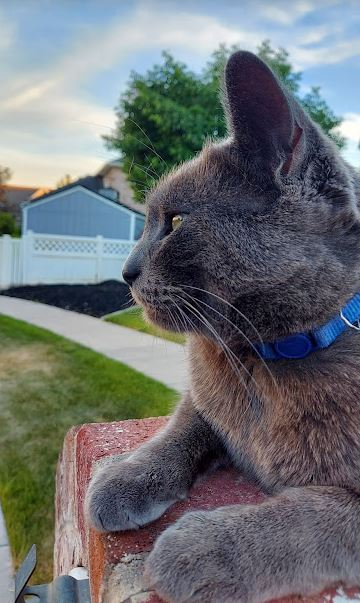
jay was a fantastic cat. he was full of personality, loving, and the best cuddler. my parents told me i could come home for the weekend, but i don't know how i can go home without him there. he would always be the first to greet me when i walked in, and he would spend each of my visits curled up on my bed with me. if he slept next to me, he's sleep like a little person; stretched out straight parallel to me, with his arms up over my shoulders. when he was annoyed he'd let out a little snort, like a really quick sigh. we'd all imitate him. he was a really silly cat, and it was easy to get pictures of him in the goofiest situations.
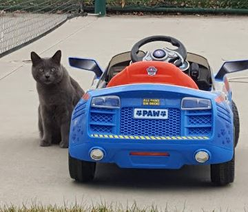
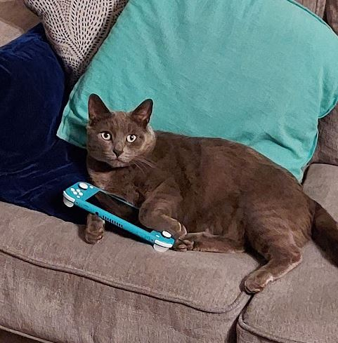
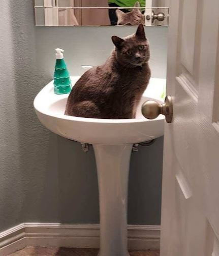
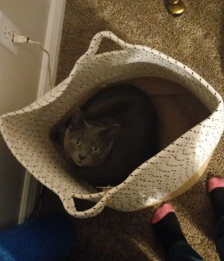
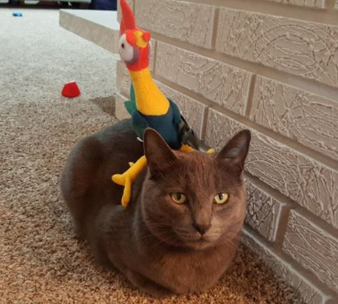
i can't believe he's gone. it doesn't feel real or whatever. how am i supposed to go home when i know he won't be there? he's not gonna meow outside my door to be let in, he's not gonna stand next to the pantry every time i walk by to beg for treats. he's never gonna spill all our catnip again and i'll never find him napping on top of my craft project. it's just not right. we've had jay since he was a kitten, he's the same age as my kindergarten sister. i watched him grow up. when he was tiny he'd scale your pant leg with his tiny little kitten claws so he could stand on your shoulder. he never grew out of being put inside my mom's sweatshirt.
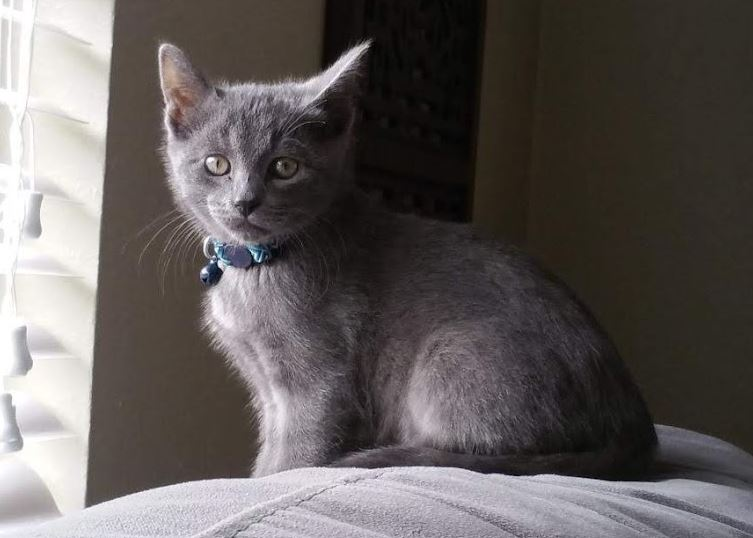
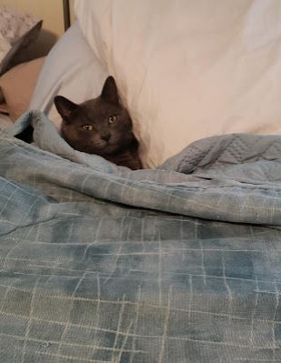
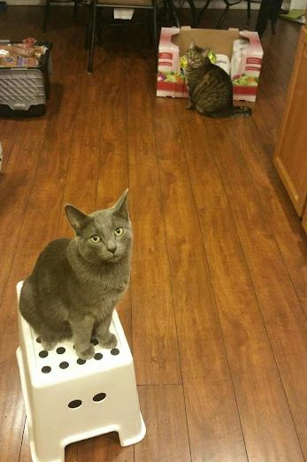
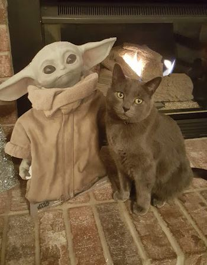
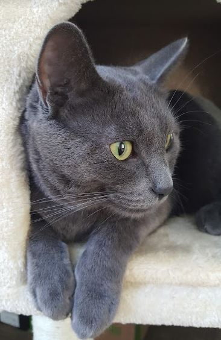
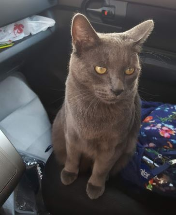
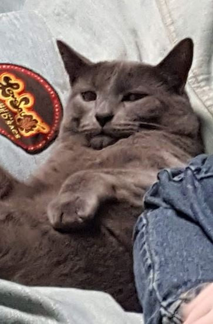
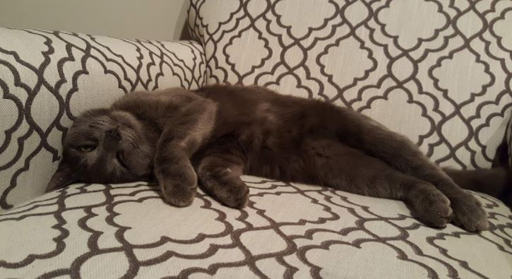
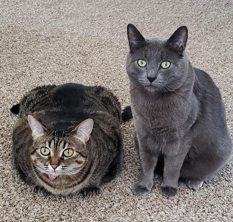
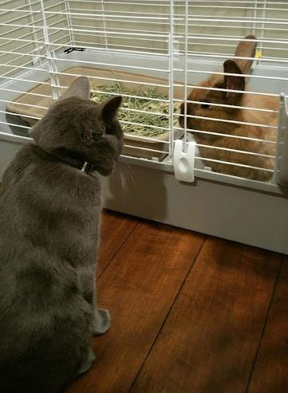
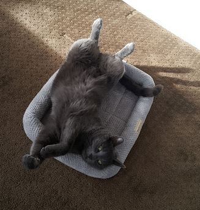
i love you, jayby. i miss you. you were a really, really good kitty.
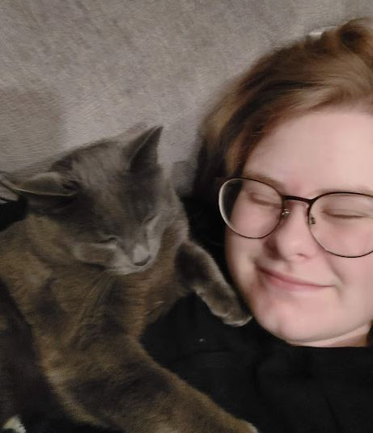
8:51 pm; november 23rd, 2021 (tuesday)
you all know the drill by now, another month flown by!so much has happened this semester that i wouldn't even know where to begin. i'm a fully-fledged cosplayer now, and i couldn't enjoy it more! i have the greatest cosplay friends, and every con and meetup i attend with them adds three years to my lifespan. we're doing a christmas party next week, and i'm overjoyed!! i'm also planning on doing a roadtrip to another state's con with them in the spring!! it's so amazing to find your people.
right now, i'm procrastinating on taking a statistics test. i can't wait to be done with math!!!
my biggest annoucement, though, is a personal and very, very happy one. do you remember Bon? she's my best friend, and if you search for her, she's ALL over this site. we've been best friends for two years, although it feels like so much longer. she has her own, too-- Bon's Bakery, although she hasn't updated it in a while (i promise that she's doing a lot better now). i love bon. she's so smart, and she cracks me up. i'm good at making her laugh, too, sometimes unintentionally. i don't really care when it's unintentional, because making her smile makes me feel like i'm on top of the world. she's so special to me, and while it's personal and close to my heart, i wanna write about how i feel! and i figure that few people will read this, so where better to ramble?
bon isn't just my best friend anymore. she's also my girlfriend :)))))
i really am the luckiest woman in the world, huh? i'm dating my best friend! and guess what?? she loves me!! it's so crazy and i'm so happy. i really, really care about her. hey, bon, if you're reading this? i love you :)
12:34 pm; october 5th, 2021 (tuesday)
hello all!i can't believe a whole month has already flown by! so much happened in september that it's hard to keep track. i got used to being moved out, and i worked a lot. i'm a caterer! my classes aren't hard, but i'm not actually interested in them, which makes them difficult. i DID go to a convention in september! i cosplayed as Shinobu from Demon Slayer, and it was probably the best three days of my life :D i caught the tiktok bug, and have been quite active there. remind me to post my cosplans later! i'm gonna do Obanai and Sanemi next.
after taking a break from coding for so long, it's been hard to get back into it. i wasn't satisfied with the Cinnamoroll theme anymore, but i didn't know what to change it to. i am VERY happy with the Halloween theming, though! hopefully this is a step in the right direction.
2:01 am; september 5th, 2021 (sunday)
hi, my name is oddie, it's 2 am and i currently have tears streaming down my face because i decided that NOW was the best time to watch clips of Mr. Rodgers5:36 pm; august 31, 2021 (tuesday)
everyone SHUT UP and LOOK AT HERSHE'S SITTING
3:16 pm; august 30, 2021 (monday)
if you see me messing around with css today... feel free to take a peek! i'm trying to update the front to be more of what i like right now.11:17 pm; august 21, 2021 (saturday)
today i moved out.it's a sureal feeling, but i like my dorm room. my roommate seems nice, and i set up a lot of my silly little anime and video game things. i like to look at them. my parents are staying in town tonight and are headed off sometime tomorrow (their house is ~2 hours from my school). freedom is quite literally on my fingertips, and.... it feels great.
more to come later.
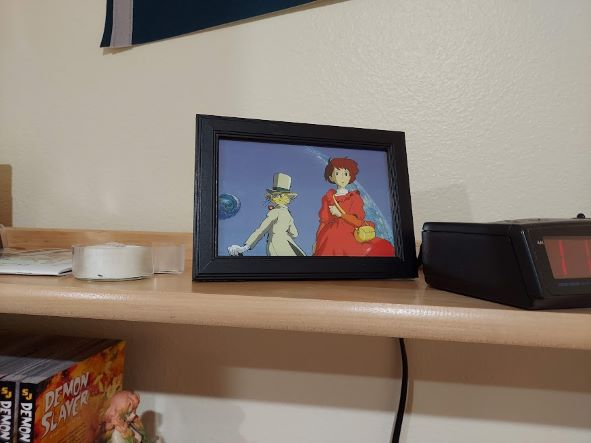
2:55 pm; july 23, 2021 (friday)
today at work we are watching cars (the movie) bc there are no customers6:34 pm; july 18, 2021 (sunday)
hello, friends and readers!i apologize for the insane dropoff in upkeep and posting here. I spend my Summers mostly outdoors and/or working, so the laptop tends to take a backseat. rest assured, soon enough i'll be back to updating more often!
i'm actually going to be moving out in about a month, and i have mixed feelings about that. for one, i'm excited to be free and out of the house (and cult), but everything right now also seems to be a "last". last camping trips with my family, last month in my bedroom, last chance to really connect with my siblings. I know it doesn't have to be, but it feels like it. don't get me wrong, i've been pretty happy lately, but it's all starting to become real.
site to-to list:
-update front page to reflect current mindscape
-update graphics on the about page
-overhaul fursuit page
-create liminality section
-find more permanent solution to sidebar
-award dewies to contestants
-update art page
-create pixel graphics for links
-update jukebox to current tastes
-update layout?
3:53 pm; july 7, 2021 (wednesday)
if god loves me why won't he let me drink the magic road water